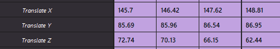
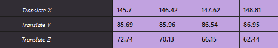
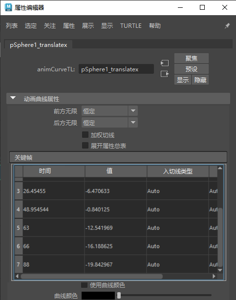

本主题介绍了“摄影表”(Dope Sheet)的“通道”(Channels)菜单中的选项。有关使用摄影表编辑器(Dope Sheet Editor)的信息，请参见使用“摄影表”(Dope Sheet)编辑关键帧。
“通道”(Channels)菜单项是用于处理动画通道的功能。
- 禁用通道(Mute Channel)/取消禁用通道(Unmute Channel)
-

- 禁用通道以隔离并聚焦动画的特定部分。例如，处理手臂和腿部已设置动画的模型时，可以使用禁用功能来关闭手臂或腿部的动画。
注： 禁用通道在通道盒(Channel Box)中显示为棕色。
- 可以在“摄影表”(Dope Sheet)中查看和操纵禁用通道并向其添加关键帧，这在要隔离和查看动画的特定部分时非常有用。编辑禁用通道时，“摄影表”(Dope Sheet)视图区域中的相应动画通道会更新。
- 也可以使用“摄影表编辑器”(Dope Sheet Editor)大纲视图中的“禁用通道”(Mute Channel)按钮 来切换通道的禁用状态。
- 锁定通道(Lock Channel)/解除锁定通道(Unlock Channel)
-

- 热键：H/J
- 使用“锁定通道”(Lock Channel)可冻结通道上的属性，使其无法更改。与“禁用通道”(Mute Channel)不同，您仍可以查看锁定通道动画，但无法对其进行编辑。
- 也可以使用“摄影表编辑器”(Dope Sheet Editor)大纲视图中的“锁定”(Lock)按钮 来切换通道的锁定状态。
- 烘焙通道(Bake Channel)
-
该操作将使用影响其特性的输入节点来计算属性的新动画通道。单击“通道 > 烘焙通道”(Channels > Bake Channel) >
 以打开烘焙通道选项(Bake Channel Options)，从中可以指定要烘焙的动画范围。
以打开烘焙通道选项(Bake Channel Options)，从中可以指定要烘焙的动画范围。
“烘焙通道”(Bake Channel)在下列情况下非常有用：
- 编辑单个动画通道，而不是影响单个属性行为的所有起作用属性，例如，受驱动关键帧或表达式影响的对象。
- 将关键帧添加到现有通道
- 有关如何烘焙“摄影表”(Dope Sheet)通道的步骤，请参见烘焙关键帧主题中的“在‘摄影表’(Dope Sheet)中烘焙动画”。
- 偏移关键帧(Offset keys)
- 在“摄影表编辑器”(Dope Sheet Editor)中按特定量推动选定关键帧。默认值为 1 帧。单击“通道 > 偏移关键帧”(Channels > Offset keys) > 以打开偏移曲线选项(Offset Curves Options)，从中可以按指定量移动关键帧。
- 属性总表(Spreadsheet)
-

“属性编辑器”(Attribute Editor)中的“属性总表”(Spreadsheet)
此菜单选项可用于在“属性编辑器”(Attribute Editor)的属性总表(Attribute Spreadsheet)中编辑选定动画通道的属性，这样就能以表格格式同时查看和编辑多个属性值。